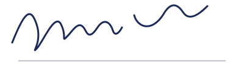

Protokół zdawczo-odbiorczy — wydanie
do umowy najmu nr R-2027-014 · Giżycko, 11.07.2027, 10:00
Strony i pojazd
| Wynajmujący | Kamper na Mazury Marek Wiśniewski, ul. Jeziorna 5, 11-500 Giżycko, NIP 000-000-00-00 |
|---|---|
| Najemca | Anna Kowalska, ul. Lipowa 12/4, 02-345 Warszawa; dowód osobisty ABC 123456; prawo jazdy 01234/12/1234, kat. B od 2012 |
| Kolejny kierowca | Tomasz Kowalski, prawo jazdy 04567/09/1234, kat. B od 2009 |
| Pojazd | Fiat Ducato alkowa, nr rej. NGI 4K27, VIN ZFA25000000K27014 |
| Okres najmu | od 11.07.2027, godz. 10:00 do 21.07.2027, godz. 16:00 |
| Stan przy wydaniu | przebieg 48 230 km; paliwo 8/8 (bak 88 l) |
| Kaucja | 5 000 zł, gotówka — przyjęta. Czynsz opłacony w całości (zadatek 1 950 zł + 4 550 zł) |
Przekazanie wyposażenia
☑ Oświadczam, iż akceptuję listę wydanego wyposażenia. (najemca)
Instrukcja użytkowania
Rozstawienie i użytkowanie
Przygotowanie do jazdy
☑ Oświadczam, że odbyłem instruktaż użytkowania i otrzymałem Skróconą Instrukcję Obsługi. (najemca)
Istniejące uszkodzenia
Nie stwierdzono.
Zdjęcia pojazdu przy wydaniu
Oświadczenia
☑ Sprawdzono dowód osobisty i prawo jazdy: Anna Kowalska, Tomasz Kowalski. (wydający)
☑ Oświadczam, że stan techniczny pojazdu jest mi znany i nie zgłaszam zastrzeżeń innych niż wpisane w protokole. (najemca)

Wydający — Marek Wiśniewski · 11.07.2027, 10:00 Najemca — Anna Kowalska · 11.07.2027, 10:00
Najemca — Anna Kowalska · 11.07.2027, 10:00Podpisano elektronicznie w CamperConnect · 11.07.2027, 10:00